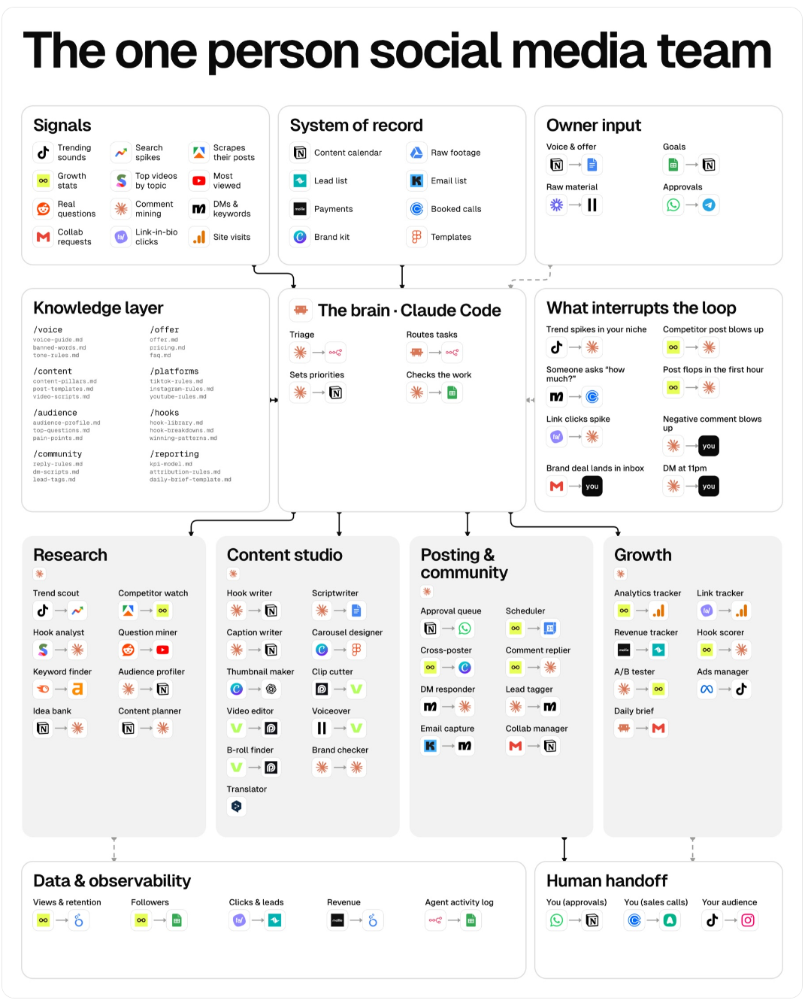
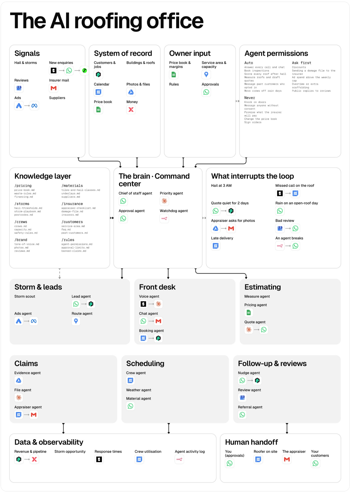
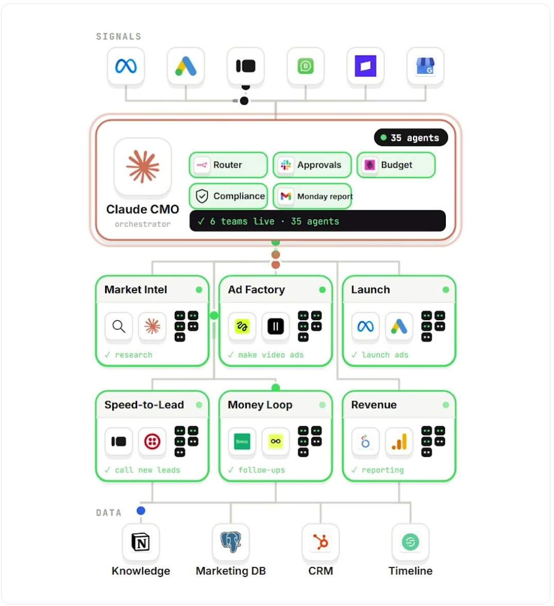
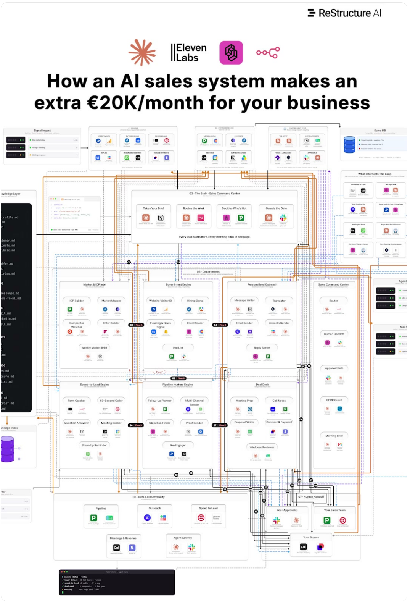
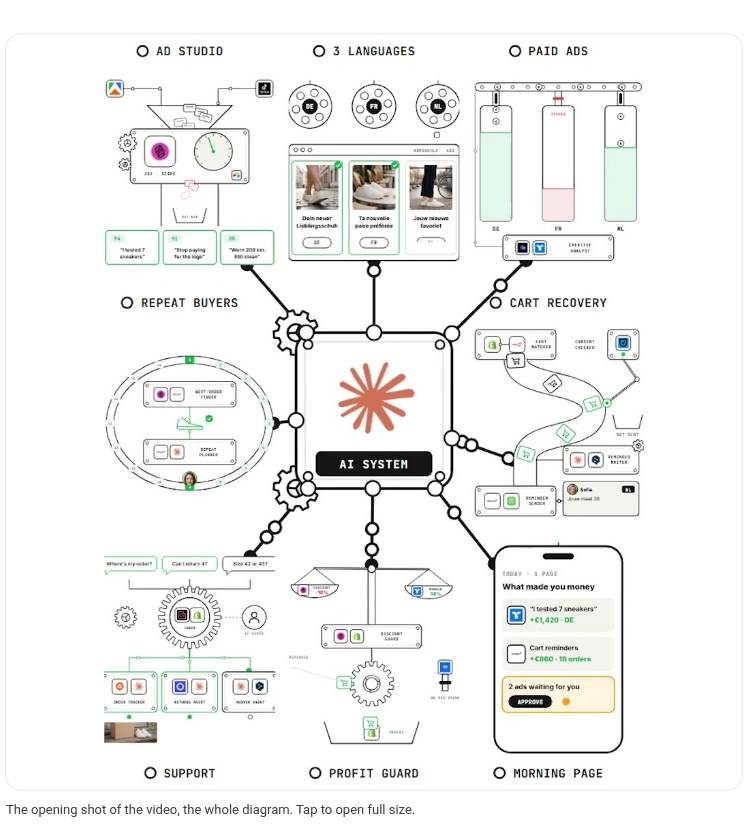
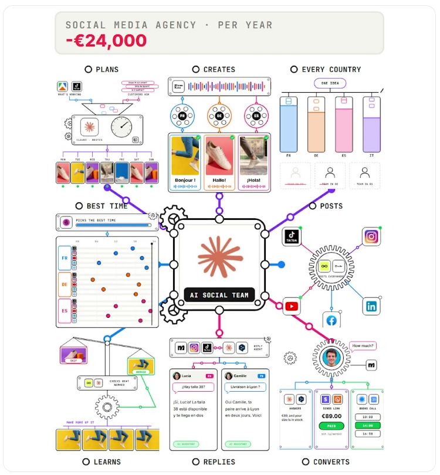
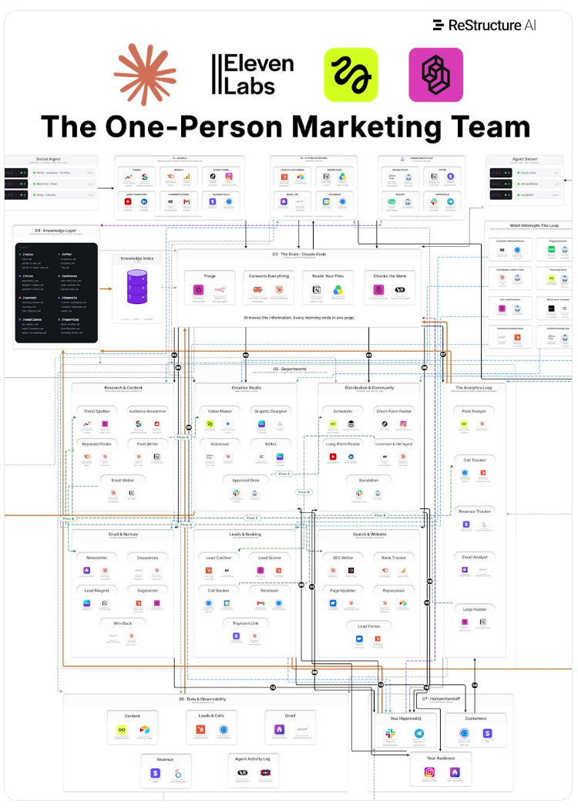
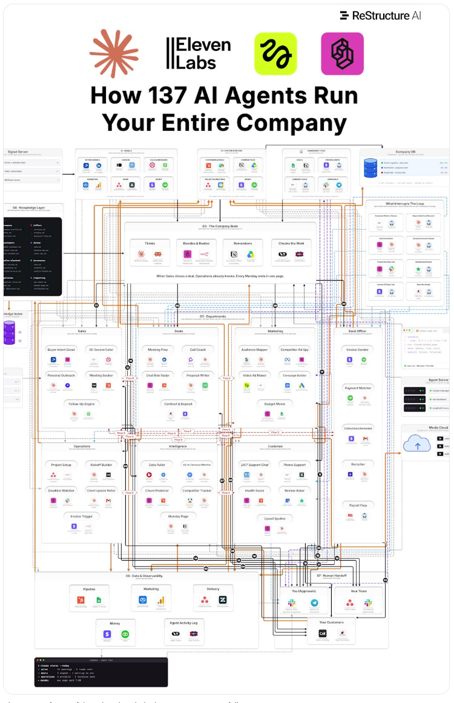
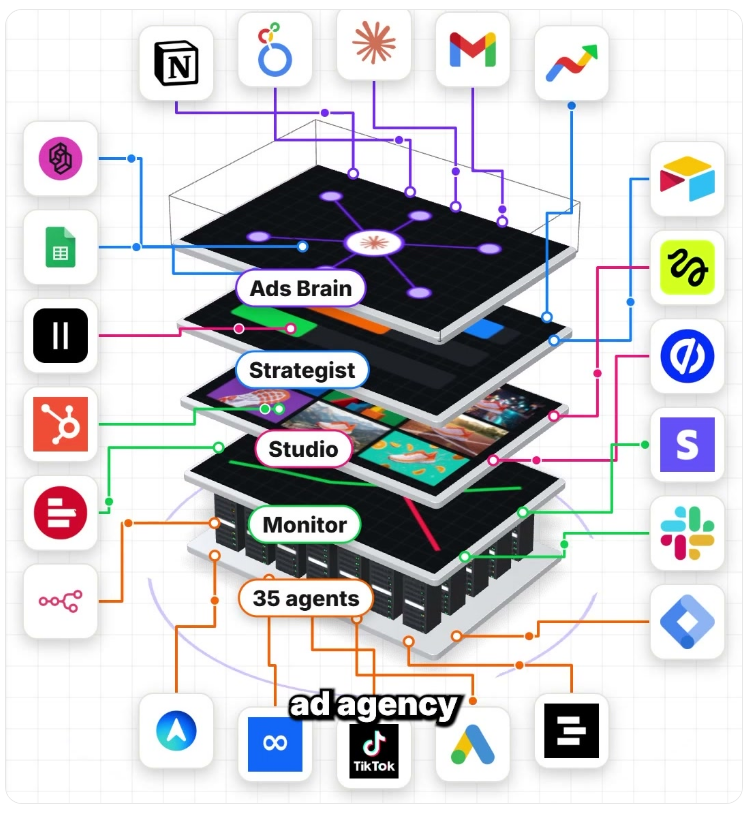

One human who owns the brand, the budget and the final yes. A brain, a handful of departments and a morning page that do everything else.
Every blueprint in the library ends on the same line: the final yes is still yours. A one-person business is not a business without people. It is a business where every repeatable job has been turned into an agent with a defined input, a defined output and a defined limit, and where the owner's time goes to the few decisions that cannot be delegated: what the brand stands for, where money goes, and who gets approved to go out.
The source describes its own spine in three steps: Capture your raw operational data (calls, transactions, tickets) → Restructure it into proprietary datasets you own → Deploy agent teams on top, which sharpen with each cycle. The asset is your data and your documented way of working. The model is a rented commodity.
All nine maps share one skeleton. Build this skeleton once; each “blueprint” is the same skeleton with different departments.
| No. | Blueprint | What it automates | Claimed scale |
|---|---|---|---|
| 01 | One-person social team | Signals → memory → content studio → approval → growth | Four teams, one brain |
| 02 | AI roofing office | Storm leads, front desk, estimating, claims, scheduling, follow-up | Six departments |
| 03 | Claude AI marketing system | Claude CMO over Market Intel, Ad Factory, Launch, Speed-to-Lead, Money Loop, Revenue | Six teams |
| 04 | AI sales system | Buyer intent, speed-to-lead voice callback, nurture, command center | “Extra €20,000/month” (claim) |
| 05 | AI system for Shopify stores | Ad studio, cart recovery, support, profit tracking | 41 agents; “€100,000/month” (claim) |
| 06 | AI social media team | Multilingual content, publishing, comments to customers | Replaces ~€24,000/yr agency (claim) |
| 07 | One-person marketing team | Research, creative, distribution, analytics, email, leads, SEO | 36 agents, “23 employees” |
| 08 | AI company system | Sales, deals, marketing, back office, ops, intelligence, customer | 137 agents |
| 09 | AI ad agency | Strategist, creative studio, performance monitor, Ads Brain | 35 agents |
Agents and tools exactly as named in the source. Treat tool names as examples of the function, not requirements.
Trend Spotter, Audience Researcher, Keyword Finder (Google Trends, SparkToro, Reddit, Semrush) → Post Writer, Email Writer (Claude, voice and offer from Notion). Steal: the question you get most is your next post; record one long take a week and cut everything from it.
Video Maker (Higgsfield, CapCut, Descript), voice (ElevenLabs), translation (DeepL), formatting (Canva) → Approval Desk (Slack) → Scheduler (Metricool or Buffer) → posters per channel. Comment & DM Agent (ManyChat + Claude) replies in the customer's language, tags the lead and sends a booking or payment link.
Post Analyst reads reach/saves/shares; the revenue side ties posts to calls booked (Calendly, HubSpot) and sales (Stripe); the Loop Feeder writes next week's plan into Notion; Looker Studio assembles the morning page.
Buyer-intent scout ranks accounts visiting pricing pages (Dealfront) → on form fill, a voice agent (ElevenLabs Agents + Twilio) calls back in under 60 seconds and books via Cal.com, logging to HubSpot → Follow-Up Engine on day 2, 5, 10, adapting to the objection.
Strategist picks platform, audience, budget split and first test. Studio makes ~10 variations per ad. Monitor watches spend, cost per lead and return daily; Budget Mover shifts money from dying ads to winners within owner-set limits. Approval Gate and Spend Guard sit on top.
Cart Watcher (Shopify) → Consent Checker (Usercentrics) → Reminder in the buyer's language via Klaviyo/WhatsApp, opted-in only; Discount Guard stops needless discounts. Support Inbox (Gorgias) answers in seconds, discloses AI, checks tracking (AfterShip), offers exchange before refund (Loop Returns), hands to you on request. Profit Tracker (Triple Whale) reports real profit per order.
Signed contract triggers project setup (Asana via n8n), kickoff doc and booking, deadline watching, and invoice on completion (Stripe). Intelligence department pulls data (Supermetrics → BigQuery), matches ad → lead → deal → payment, predicts churn, and writes the Monday page.
After an event, rank the hardest-hit prospects first and message opted-in past customers; route every missed call to one number that always answers; send good/better/best quotes to the phone fast; follow up from day 2; ask every customer, not just happy ones, for a review.
| Guardrail | Rule |
|---|---|
| Approval | All outbound posts, ads, discounts and money moves pass one human queue (Slack / Telegram) before execution. |
| Permissions | Per agent, three lists: does alone · asks first · never touches. Plus hard spend and discount limits. |
| Consent | Message only people who opted in; check consent before every reminder. |
| Disclosure | Support and voice agents state they are AI. |
| Data residency | Keep customer data in-region; the source stresses EU. Private on-device option: Mac mini / Mac Studio running open models, with audit log and access control. |
| Observability | Trace every agent's runs, cost and errors. Review weekly. |
| Escalation | Complaints, legal, refunds above a threshold, unusual requests go to the owner, not an agent. |
This sequencing is my synthesis, not the source's. The source says “start with one process”. Timings are rough planning ranges and will usually run over.
| Phase | Build | Done when |
|---|---|---|
| 0 · Foundation (wk 1–2) | One-page offer, voice guide, banned words, price list, ideal customer in Notion. Pick CRM. Create Slack approval channel. | A stranger could write on-brand copy from the folder alone. |
| 1 · Capture (wk 2–4) | Every enquiry (form, DM, call, email) lands in the CRM with source tagged. Booking link live. | You can say where each of last 20 leads came from. |
| 2 · Speed & follow-up (wk 4–8) | Instant reply on new lead; day 2/5/10 sequence; booking. Humans on the call. | Median response time under 5 minutes, measured. |
| 3 · Content loop (wk 8–12) | Weekly: one recording → drafts → approval queue → scheduler. Comment/DM reply with link. | Posts tied to leads in the CRM. |
| 4 · Morning page (wk 10–14) | One dashboard / message: leads, calls, revenue by source, what to do next. | You decide the week from it. |
| 5 · Expand | Add ads, support or cart recovery only after the loop above earns its cost. Raise autonomy one agent at a time. | Each agent has a measured payback. |
The source is Europe-focused (GDPR, multilingual EU markets, euro pricing). Translating it: use your own markets' languages (Malayalam, Hindi, English, Tamil) and check that tools support them well; WhatsApp Business is likely your highest-leverage channel; payment links through a local gateway (e.g. Razorpay) in place of Stripe; consent and data-handling should follow India's Digital Personal Data Protection Act, 2023, and commercial messaging has TRAI/DLT rules for SMS and calls. This is from memory and may be outdated. Confirm with a lawyer and a chartered accountant before collecting customer data or automating outreach, and for GST and registration.
Captured from each blueprint page (full-page screenshots, cropped to the map). Tap-to-zoom originals are on the source site. Rendering is at reduced size; the structure is what matters.









All on restructure-europe.vercel.app/en/ (read 7 Nov 2026): newsletter/ (index) and the nine blueprints: social, roof, system, sales, store, social-team, marketing-team, agent-company, ad-agency; about/, reese-mini/, reese-studio/, careers/, contact/, get-started/. External links (Skool community, cal.com booking, social profiles) were not opened. Note: the company's own hardware pages (Reese Mini on Mac mini, Reese Studio on Mac Studio) describe on-premises private AI with local open models, an audit log and access control, which matters if your data cannot leave your control. Company context (About page): HQ San Francisco, office Amsterdam; self-reported audience 102K+ and 1,017 inbound leads as of 5 Nov 2026 (unverified).